В НАЧАЛЕ ВЫ ВСЕГДА ВЫБИРАЕТЕ КАК БУДЕТЕ ВЫГЛЯДЕТЬ ПОСЛЕ ПЕРМАНЕНТНОГО МАКИЯЖА
При подготовке эскиза, обязательно учтем ваш тип внешности и пожелания
В чем плюсы такого подхода:
Вы заранее знакомитесь и выбираете мастера, который вам больше нравится по качеству работ и
личным предпочтениям
Не тратите деньги впустую, а сразу видете результат, который вы давно хотели получить. А
если что-то не так, эскиз всегда можно подправить
Перестаете бояться процедуры, потому что мастер рассказывает и показывает обо всем
Всегда имеете возможность подумать, перед тем как согласиться на процедуру
Посмотрите короткое видео,как проходит процедура.
ПОЗНАКОМЬТЕСЬ С НАШЕЙ СТУДИЕЙ ПОБЛИЖЕ
С ВАМИ БУДУТ РАБОТАТЬ ОДНИ ИЗ ЛУЧШИХ МАСТЕРОВ ПЕРМАНЕНТНОГО МАКИЯЖА В МОСКВЕ
Мы отбирали состав мастеров годами и у нас работают профессионалы с безупречным
вкусом
ОксанаСтаж: 6,5 лет
Более 6 лет я работаю в индустрии красоты и вхожу в топ 100 мастеров России
по перманентному макияжу!
Мои главные принципы в работе - это:
-Постоянное развитие
-Качество
-️Подчеркивание уникальности и красоты каждой женщины
Работая с лицами девушек,женщин,я получаю огромное удовольствия от того,что я
помогаю им выглядеть красивыми и счастливыми,ведь перманентный макияж
решает главную проблему женщин-как остаться красивой и ухоженной 24 часа в
сутки)
Меня зовут Наталия и я мастер ПМ в студии MakeUpTattoo.Что могу сказать о
себе? Так или иначе моя жизнь всегда шла в параллели с искусством, а именно
с рисованием. Акварель, нейл арт, визаж, портреты... постепенно подводили к
перманентному макияжу, где наконец все сошлось! И теперь я воплощаю красоту
в жизнь!
Практикующий мастер-бровист и мастер перманентного макияжа. Занимаюсь
дизайном бровей с окрашиванием краской и хной. Владею всеми методами
коррекции бровей (пинцет, воск, нить) Имею опыт в преподавательской
сфере 2 года, тренер курсов по архитектуре бровей.
Люблю свою работу и отдаюсь ей полностью. В моей профессии не существует
мелочей, важно всё! И отнюдь не на последнем месте чуткое отношение к
пожеланиям клиента и искренность в стремлении получить тот результат, на
который клиент рассчитывает. Ну, а взаимный обмен улыбками меняет наш мир к
лучшему!Всегда была уверена, что стану психологом (хотя мастер
перманентного макияжа – чем не психолог) верю в карму и силу мысли.
Считаю, что качественный перманентный макияж это в первую очередь
естественность и гармоничность вашего образа. Для меня, как для мастера
перманентного макияжа, одной из самых главных задач является
профессиональный рост и улучшение своих навыков. Ведь чем больше ты
развиваешься, тем более качественной становится твоя работа!
«В моем понимании перманентный макияж - это эстетичный умеренный макияж,
подчеркивающий красоту лица.Обожаю свою работу, получаю удовольствие от
общения с людьми, эмпат. Клиенты говорят, что я заряжаю их своим
спокойствием.Люблю делать девушек красивее, наблюдать за вашими улыбками от
преображения в зеркале! Не люблю, когда работа выполняется ‘на поток’; я за
индивидуальный подход к клиентам.»
«В работе всегда учитываю индивидуальные особенности каждой девушки,
предлагая свой мужской взгляд на женскую красоту. Во время процедуры
стараюсь обеспечить максимальный комфорт, применяю современные
нетравматичные техники, благодаря чему восстановление кожи проходит мягко,
без корочек, с шелушением. Я "за" естественность и максимально натуральный
вид перманентного макияжа, но обязательно учитываю мнение тех, кому хочется
поярче.»
«Для меня главное в перманентном макияже - умеренность и естественность. Вот
уже более трёх лет я занимаюсь любимым делом, помогая раскрыть и
подчеркнуть красоту каждой своей клиентки. Перманентный макияж это ваша
безупречность в любых условиях, это ваше новое восприятие себя. Жизнь
слишком прекрасна, чтобы тратить время на нанесение косметики, хотите
попробовать?»
«Предлагаю вам воспользоваться услугой и получить удовольствие, поменяться в
свою лучшую сторону и подчеркнуть индивидуальную красоту, а также с помощью
ПМ сэкономить время на повседневный макияж! В работе я всегда учитываю ваши
пожелания и предпочтения в окончательном результате, также помогу подобрать
форму и цвет (если сомневаетесь).»
«В работе для меня главное не нарисовать новое лицо, а подчеркнуть
индивидуальность и скрыть недостатки. Несколько фактов обо мне. В детстве
себе и всем куклам рисовала макияж, используя мамину косметичку (наверно,
она была очень рада).»
«Считаю абсолютно всех женщин красивыми. В каждой своя изюминка, в каждой
своя уникальная черта, отличающая нас друг от друга, и выделяющая на фоне
всех остальных. Задача мастера - увидеть эту уникальность, и подчеркнуть
её, не нарушив, при этом, естественности и натуральности. К сожалению,
женщина сегодня выполняет сотни функций одновременно, и не всегда имеет
возможность ежедневно уделять внимание и время своей внешности.»
«В моем понимании перманентный макияж - это длительный макияж, созданный с
учетом индивидуальных особенностей и подчеркивающий красоту лица. Для меня
приоритет- это аккуратность в работе, ведь важна каждая мелочь в создании
полноценного образа. Я предлагаю вам не просто макияж, а совместную работу
над вашим образом. А залог отличного результата - это безболезненная
стирильная процедура, результат которой будет с вами долгое время.»
«Награды: заняла 2ое место в международном конкурсе World Beauty Voyage PMU,
категория Джекпот в 2021г. Также 2-3 раза в год посещаю
мастер-классы/форумы по повышению квалификации у лучших мастеров и в самых
востребованных академиях России и Мира»
Более 6 лет я работаю в индустрии красоты и вхожу в топ 100 мастеров России
по перманентному макияжу!
Мои главные принципы в работе - это:
-Постоянное развитие
-Качество
-️Подчеркивание уникальности и красоты каждой женщины
Работая с лицами девушек,женщин,я получаю огромное удовольствия от того,что я
помогаю им выглядеть красивыми и счастливыми,ведь перманентный макияж
решает главную проблему женщин-как остаться красивой и ухоженной 24 часа в
сутки)
Меня зовут Наталия и я мастер ПМ в студии MakeUpTattoo.Что могу сказать о
себе? Так или иначе моя жизнь всегда шла в параллели с искусством, а именно
с рисованием. Акварель, нейл арт, визаж, портреты... постепенно подводили к
перманентному макияжу, где наконец все сошлось! И теперь я воплощаю красоту
в жизнь!
Практикующий мастер-бровист и мастер перманентного макияжа. Занимаюсь
дизайном бровей с окрашиванием краской и хной. Владею всеми методами
коррекции бровей (пинцет, воск, нить) Имею опыт в преподавательской
сфере 2 года, тренер курсов по архитектуре бровей.
Люблю свою работу и отдаюсь ей полностью. В моей профессии не существует
мелочей, важно всё! И отнюдь не на последнем месте чуткое отношение к
пожеланиям клиента и искренность в стремлении получить тот результат, на
который клиент рассчитывает. Ну, а взаимный обмен улыбками меняет наш мир к
лучшему!Всегда была уверена, что стану психологом (хотя мастер
перманентного макияжа – чем не психолог) верю в карму и силу мысли.
Считаю, что качественный перманентный макияж это в первую очередь
естественность и гармоничность вашего образа. Для меня, как для мастера
перманентного макияжа, одной из самых главных задач является
профессиональный рост и улучшение своих навыков. Ведь чем больше ты
развиваешься, тем более качественной становится твоя работа!
«В моем понимании перманентный макияж - это эстетичный умеренный макияж,
подчеркивающий красоту лица.Обожаю свою работу, получаю удовольствие от
общения с людьми, эмпат. Клиенты говорят, что я заряжаю их своим
спокойствием.Люблю делать девушек красивее, наблюдать за вашими улыбками от
преображения в зеркале! Не люблю, когда работа выполняется ‘на поток’; я за
индивидуальный подход к клиентам.»
«В работе всегда учитываю индивидуальные особенности каждой девушки,
предлагая свой мужской взгляд на женскую красоту. Во время процедуры
стараюсь обеспечить максимальный комфорт, применяю современные
нетравматичные техники, благодаря чему восстановление кожи проходит мягко,
без корочек, с шелушением. Я "за" естественность и максимально натуральный
вид перманентного макияжа, но обязательно учитываю мнение тех, кому хочется
поярче.»
«Для меня главное в перманентном макияже - умеренность и естественность. Вот
уже более трёх лет я занимаюсь любимым делом, помогая раскрыть и
подчеркнуть красоту каждой своей клиентки. Перманентный макияж это ваша
безупречность в любых условиях, это ваше новое восприятие себя. Жизнь
слишком прекрасна, чтобы тратить время на нанесение косметики, хотите
попробовать?»
«Предлагаю вам воспользоваться услугой и получить удовольствие, поменяться в
свою лучшую сторону и подчеркнуть индивидуальную красоту, а также с помощью
ПМ сэкономить время на повседневный макияж! В работе я всегда учитываю ваши
пожелания и предпочтения в окончательном результате, также помогу подобрать
форму и цвет (если сомневаетесь).»
«В работе для меня главное не нарисовать новое лицо, а подчеркнуть
индивидуальность и скрыть недостатки. Несколько фактов обо мне. В детстве
себе и всем куклам рисовала макияж, используя мамину косметичку (наверно,
она была очень рада).»
«Считаю абсолютно всех женщин красивыми. В каждой своя изюминка, в каждой
своя уникальная черта, отличающая нас друг от друга, и выделяющая на фоне
всех остальных. Задача мастера - увидеть эту уникальность, и подчеркнуть
её, не нарушив, при этом, естественности и натуральности. К сожалению,
женщина сегодня выполняет сотни функций одновременно, и не всегда имеет
возможность ежедневно уделять внимание и время своей внешности.»
«В моем понимании перманентный макияж - это длительный макияж, созданный с
учетом индивидуальных особенностей и подчеркивающий красоту лица. Для меня
приоритет- это аккуратность в работе, ведь важна каждая мелочь в создании
полноценного образа. Я предлагаю вам не просто макияж, а совместную работу
над вашим образом. А залог отличного результата - это безболезненная
стирильная процедура, результат которой будет с вами долгое время.»
«Заняла 2ое место в международном конкурсе World Beauty Voyage PMU, категория
Джекпот в 2021г. Также 2-3 раза в год посещаю мастер-классы/форумы по
повышению квалификации у лучших мастеров и в самых востребованных академиях
России и Мира»
Волосковая техникаАреолы грудиПерекрытие старого татуажаКоррекция в период 1-3 месяцаРефреш для наших клиентовЛазерное далениеУдаление ремуверомСнятие нарощенных ресницМушкаКарбоновый пиллинг
10 000 Р10 000 Р+2 000 Р-50% от первичной процедуры-2 000 Р от прайса мастера3 500 Р5 000 Р500 Р1 500 Р3 000 р
Во время бесплатной консультации вы поймете:
— как изменится лицо с новым макияжем
— комфортно ли вам общаться с мастером
По статистике и отзывам наших клиенток, перманентый макияж делает их на несколько лет моложе
НЕ НАШЛИ ОТВЕТ НА СВОЙ ВОПРОС?
Оставьте заявку и наш администратор с вами свяжется
Болезненность процедуры зависит от болевого порога клиента. Для женщин важную
роль играет день цикла, усталость, прием лекарственных препаратов и другие внешние и внутренние
факторы. Перед процедурой мастер проводит местную анестезию, при необходимости повторяет ее в
течение сеанса. Благодаря современным аппаратам, щадящим техникам и качественным анестезирующим
препаратам специалистам удается свести болевые ощущения к минимуму.
Время сеанса рассчитывается индивидуально и зависит от выбранного участка и
техники нанесения перманентного макияжа (косметического татуажа). В среднем процедура занимает
от 1,5 до 3 часов. В это время входит:
- консультация,
- заполнение документации,
- создание эскиза,
- анестезия и подготовка к процедуре,
- нанесение макияжа.
Перманентный макияж держится от года до трех лет. Минимальный срок службы
перманентного макияжа бровей – 12 месяцев. Дольше всего сохраняется пигмент, нанесенный на
глаза.
Процесс процедуры безопасен. Игла стерильная, одноразовая, вскрывается при
клиенте. Пигмент наносится на верхние слои дермо, очень поверхностно и не проникает глубоко (не
достает до луковицы волоска) - это не вредно.
Для того, чтобы пигмент лучше держался. Также на коррекции можно доработать
результат - сделать его ярче, более выраженный градиент, скорректировать по цвету или форме,
оценить уже заживший результат.


 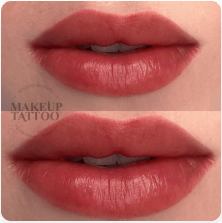
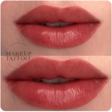


 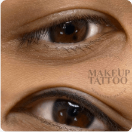
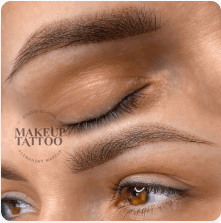
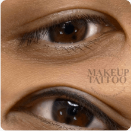
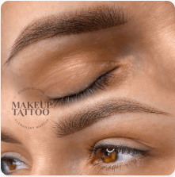


 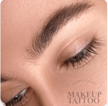
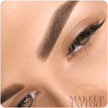
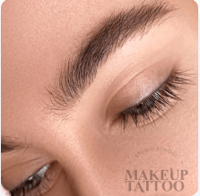
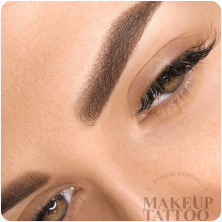
 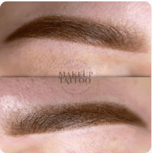
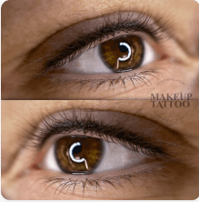
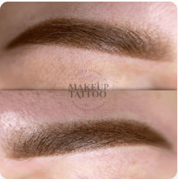
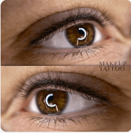


 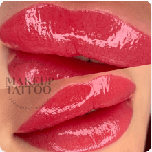
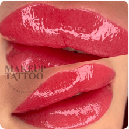


 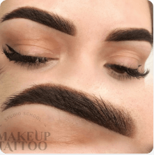
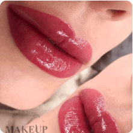
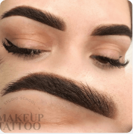
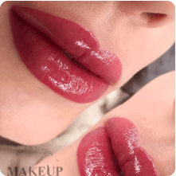


 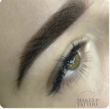
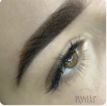